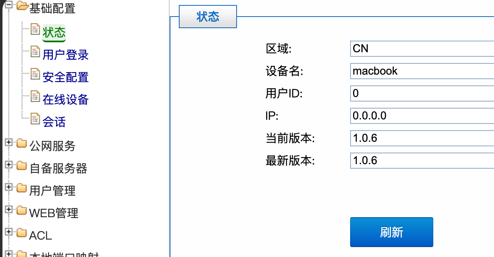
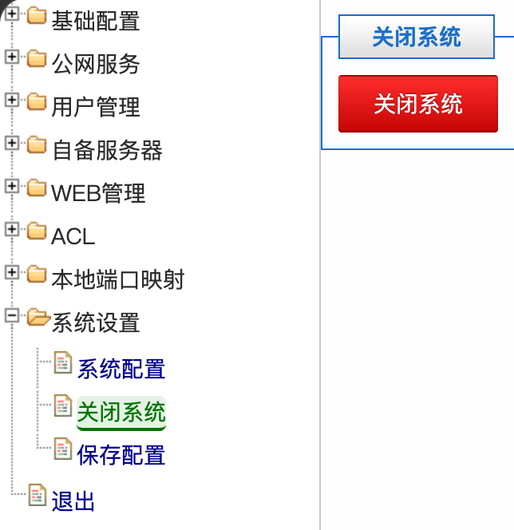

通过浏览器访问 http://localhost:8888 ，输入管理员/密码后，进入管理页面
默认管理员/密码均为 admin ，请尽快到"WEB管理-WEB管理员"界面修改密码
页面展示如下:

说明：左侧是导航栏，可以点击不同项目进行不同的配置。 右侧展示配置的内容
点击"系统设置-关闭系统"中的"关闭系统"按钮，可以关闭VNMesh服务：

可以通过Telnet访问系统，进行交互式命令配置:
telnet localhost 2300 Trying 127.0.0.1... Connected to localhost. Escape character is '^]'. user-view>config-view config-view>xnetc-view xnetc-view>show this
如上所示，telnet成功后，输入 config-view 和 xnetc-view 后可以进入xnetc配置视图，输入 show this 可以显示当前配置，输入 ? 可以显示帮助信息，输入 tab 可以补全命令。
可以在命令行界面进行配置，例如配置用户名/密码:
xnetc-view>user example xnetc-view>password simple 123456
可以使用命令行进入sys-view，关闭vnmesh进程:
user-view>config-view config-view>sys-view sys-view>sys exit ...退出vnmesh
./vnmesh -c user-view>config-view config-view>xnetc-view xnetc-view>user example xnetc-view>password simple 123456 xnetc-view>quit config-view>quit user-view>quit Quit the app? y/n:y ...退出vnmesh ./vnmesh -d ...以后台方式启动vnmesh，加载刚刚的配置